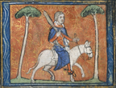
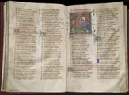
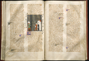
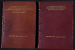
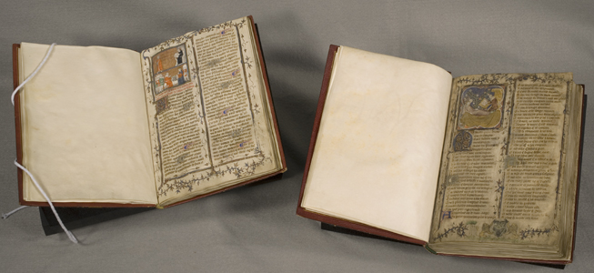

A Tale of Two Manuscripts Reunited
The Making of the Manuscripts
The University of Chicago’s manuscripts of Le Roman de la Rose and Le Jeu des échecs moralisé were produced ca. 1365, about 100 years before the invention of printing. By the 14th century, there was a well-developed book trade outside of monastic scriptoria, supplying Bibles, Books of Hours, or prayer books for private devotion, and other liturgical books; legal, medical, philosophical, and other texts for students; and manuscripts of secular works. Professional trades had developed for each specialized component of manuscript production, including making ink and pigments; preparing parchment from animal skin; and writing and decorating the text by scribes, illuminators, rubricators, gilders; and binders.
During the reign of Charles V of France (1364-1380), manuscript production flourished at the court. The King; his brothers, Philip, Duke of Burgundy, and John, Duke of Berry; and other members of the nobility commissioned translations into French and the creation of original works in French. Members of the court patronized workshops of scribes and artists in which manuscripts of religious and secular texts were written and illuminated. One of these artists, known as the “Master of Saint Voult,” created the illuminations of The University of Chicago’s manuscripts of Le Roman de la Rose and Le Jeu des échecs moralisé.
 The physical and artistic similarities between the two manuscripts are stunning: they are the same size; each has 39 lines of text in two columns; the faces and poses of the figures, the colors, patterns and design of the border and background decorations are nearly interchangeable.
The Long and Winding Road to Chicago
Provenance – or ownership history – is a crucial part of authenticating and studying an object. In the case of books and manuscripts, provenance is reconstructed from inscriptions and marginalia in the volume, together with external documentation such as estate inventories and auction and bookseller records.
The earliest indications of common ownership of Le Roman de la Rose and Le Jeu des échecs moralisé come from comments and names written in the manuscripts themselves. Appearing in various forms are the names of early 16th-century owners: Petro Gendron, Bertran Garnier and J. Gendron. The first external evidence for the fact that they were bound together appears in the catalogue of the sale of the library of Thomas Crofts, M.A., Chancellor of the Diocese of Peterborough, April-May 1782. The manuscripts are described as lot 8299.
Nearly two hundred years later, the manuscripts were purchased by Sir Sydney Cockerell, who wrote the following note in the Roman de la Rose: "I bought this book at Sotheby’s. The name of the owner did not appear but Dr. Warner tells me that he was a Captain Douglas, and that he brought the book to show him at the British Museum. It was rebound for me by Miss Adams of Broadway in red pigskin. It had no cover when I bought it, March 16, 1907, lot 382." Katharine Adams, a well-known bookbinder, gave the manuscripts identical treatment and signed each binding.
Cockerell sold his manuscripts over a lengthy period of time. When he sold Le Jeu des échecs moralisé, it was purchased for The University of Chicago with funds provided by Shirley Farr, an early donor to the University who was instrumental in building the Library’s manuscript collection. Le Roman de la Rose stayed in Cockerell’s collection until February 18, 1957, when it was sold to the bookseller Pierre Berès. The following year it was sold by Pierre Berès to Gérard de Berny. De Berny, a private collector, sold his library in 1958, but the catalogue of the sale does not list this manuscript. In 2000 it was purchased by Les Enluminures LTD from a private collector. Sandra Hindman of Les Enluminures, which has offices in Paris and Chicago, knew that The University of Chicago held Le Jeu des échecs moralisé, and thus the manuscript made the final leg of its journey to Chicago.
